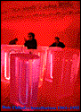

Exhibition Catalogs

Dale Chihuly: Installations 1964-1992
By Patterson Sims
Published by the Seattle Art Museum, 1992
72 pages, including numerous illustrations in both color and black-and-white
Paperback, $19.95
This lively book explores the evolution of Dale Chihuly's art over a 28-year span, including his early textile and glass weavings of the 1960s, his neon installations of the 1970s, and his more recent glass pieces, which are reminiscent of jellyfish and other sea forms.
After the Photo-Secession: American Pictorial Photography, 1910-1955
By Christian A. Peterson
Published by W. W. Norton, 1997
224 pages; 90 color illustrations
Hardcover $45; paperback $27.50
This book looks at the pictorialist movement that followed Alfred Stieglitz and the Photo-Secession. Encompassing a host of styles--from painterly, soft-focus traditional beauty to dramatic modernism to slick, professional commercialism--pictorialism was practiced by photographers such as William Mortensen, A. Aubrey Bodine, and Adolf Fassbender. It was widespread in the United States until 35-mm cameras and color photography became popular in the 1950s.
Landmarks in Print Collecting: Connoisseurs and Donors at the British Museum since 1753
Edited by Antony Griffiths
Published by British Museum Press and Parnassus Foundation in association with The Museum of Fine Arts, Houston, 1996
304 pages; 9 color and 159 black-and-white illustrations
Paperback $40
Ten essays by members of the British Museum's Department of Prints and Drawings trace the history of one of the world's greatest print collections. Focusing on the gifts, bequests, and purchases that form the collection's core, they discuss the principal collectors and benefactors and chart the evolution of ideas about the purpose and function of prints. Nine appendixes present unpublished documents from the museum's archives.
The Choice of the Private Trader: The Private Market in Chinese Export Porcelain Illustrated from the Hodroff Collection
By David S. Howard
Published by Zwemmer, 1994
298 pages; 343 color illustrations
Hardcover $80
David Howard throws new light on the private trade in Chinese export porcelain conducted by the agents and ship's officers of the East India Companies during the 17th and 18th centuries. Over 300 objects from the Hodroff collection illustrate the variety of porcelain forms and decoration chosen for these private cargoes.